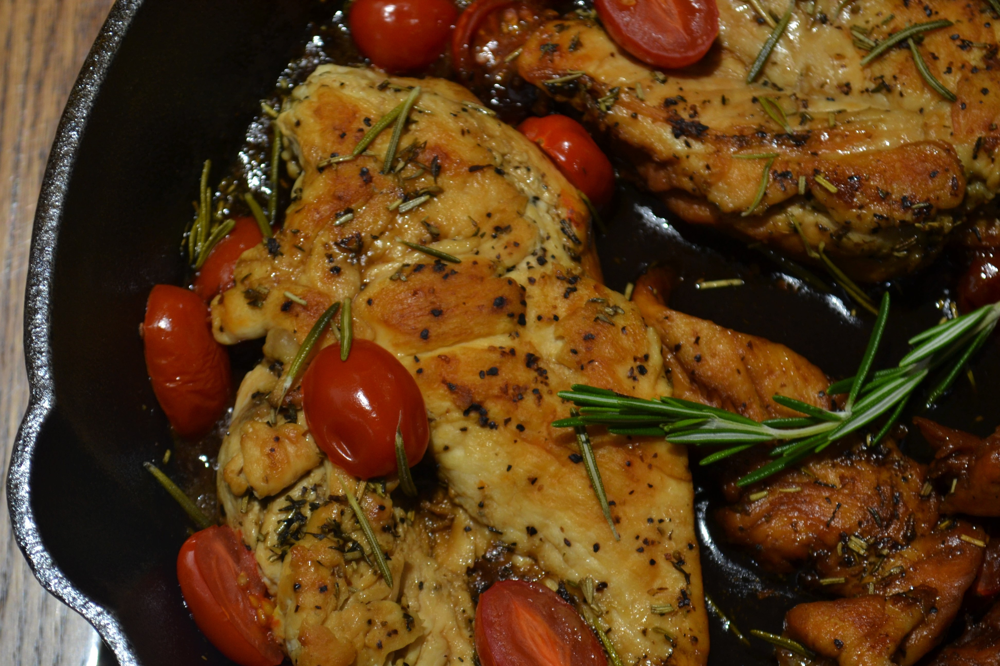

Lemon Chicken Piccata Recipe


Ingredients
- 3 large skinless, boneless chicken breast halves - cut into 1/2-inch medallions
- salt and pepper to taste
- ½ cup all-purpose flour
- 2 tablespoons vegetable oil, or as needed
- 1 clove garlic, minced
- 1 cup low sodium chicken broth
- ½ lemon, thinly sliced
- ¼ cup fresh lemon juice
- 2 tablespoons capers, drained and rinsed
- 3 tablespoons butter
- 2 tablespoons minced Italian (flat-leaf) parsley
Kitchen Equipment
- Oven
- Serving platter
- Skillet
- Stirring spoon
- Knife
Directions
- Preheat oven to 200 degrees F (95 degrees C). Place a serving platter into the oven to warm.
- Season the chicken breast pieces with salt and pepper and dredge them in flour.
- Shake off excess flour. Heat the vegetable oil in a skillet; pan-fry the chicken pieces until golden brown on both sides, about 3 minutes per side.
- Work in batches and do not crowd skillet, adding oil as needed . Place the chicken pieces onto the warmed platter in the oven.
- When finished with all the chicken, drain most of the oil from the skillet, leaving a thin coating on the surface of the pan.
- Cook and stir the minced garlic in the skillet until fragrant, about 20 seconds. Pour in the chicken broth.
- Scrape and dissolve any brown bits from the bottom of the skillet. Stir in the lemon slices and bring the mixture to a boil.
- Let cook, stirring occasionally, until the sauce reduces to about 2/3 cup, 5 to 8 minutes.
- Add the lemon juice and capers; simmer until the sauce is reduced and slightly thickened, about 5 minutes more.
- Drop the butter into the skillet and swirl it into the sauce by tilting the skillet until the butter is melted and incorporated.
- Add the parsley; remove from heat and set aside.
- Arrange the chicken medallions on serving plates and spoon sauce over each portion to serve.
(Original recipe at AllRecipes.com.)
Photo by Sam Moqadam and Mary Copley on Unsplash